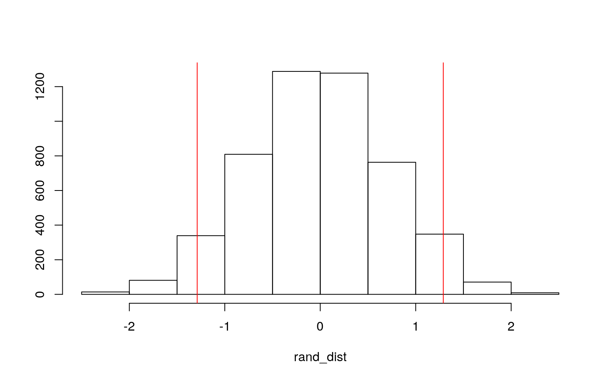
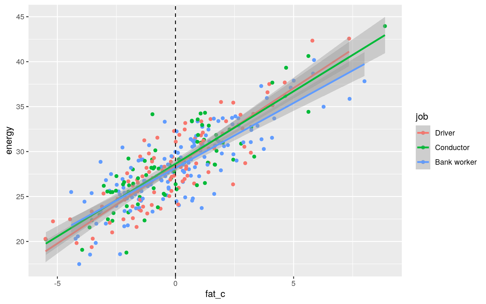
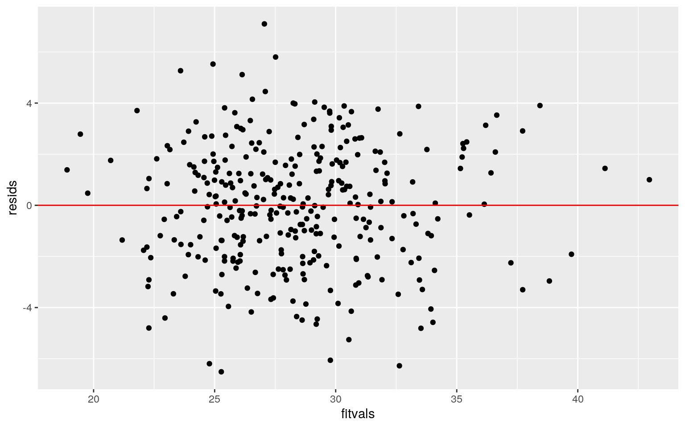
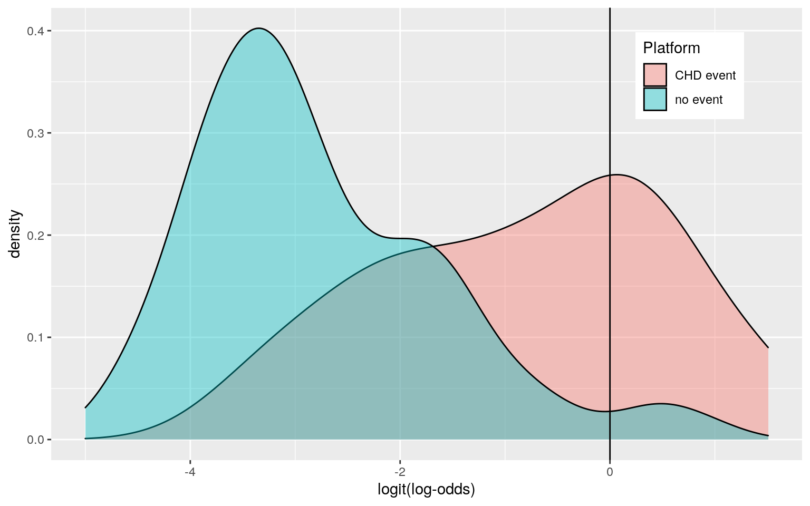
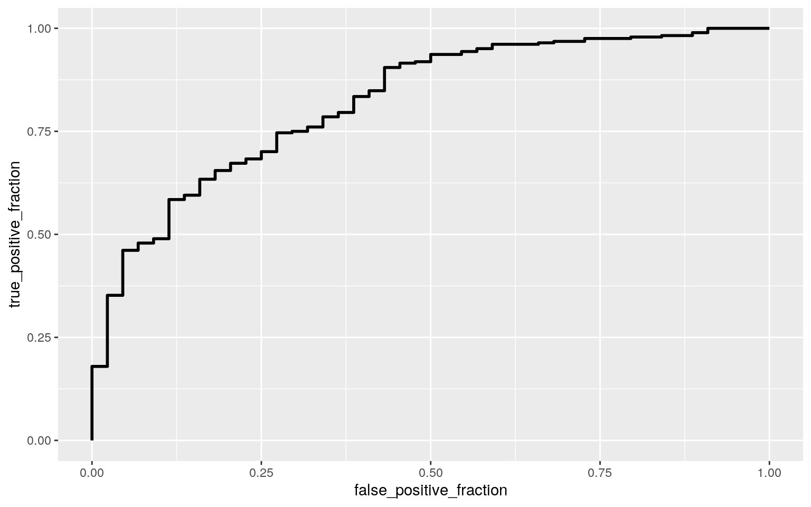

The dataset being used for this project was pulled from the “Epi” package and is called “diet.” This dataset contains information on diets and other variables on a total of 337 individuals (this was shortened to 328 do to NAs). Variable y is the number of years at risk for coronary heart disease. Variable job is the individuals occupation and is categorical for either Driver, Conductor, or Bank worker. Variable energy is the total energy intake in kCal per day/100/ Height and weight are measured in cm and kg respectively. The variables fat and fibre are the intakes for each measured in 10g/day. The variable energy.grp groups bu daily energy intake; it is a categorical with the two levels of <=2750 KCal and >2750 KCal. Lastly chd is if the individual has coronary heart disease.
install.packages("Epi", repos = "http://cran.us.r-project.org")
library("Epi")
data(diet)
diet2.0 <- diet %>% na.omitThe following tests will investigate assumptions that are to be met in a MANOVA.
group <- diet2.0$energy.grp
DVs <- diet2.0 %>% select(y,energy,height,weight,fat,fibre)
sapply(split(DVs,group), mshapiro_test)## <=2750 KCals >2750 KCals
## statistic 0.9297427 0.834308
## p.value 1.024356e-06 5.464934e-13Here a a formal test of multivariate normality assumption was done but the null is rejected with the two p values of 1.024356e-06 and 5.464934e-13 for the two groups of “<=2750 KCals” and “>2750 KCals” respectively which means the multivariate normality assumption is not met.
box_m(DVs, group)## # A tibble: 1 x 4
## statistic p.value parameter method
## <dbl> <dbl> <dbl> <chr>
## 1 60.4 0.0000112 21 Box's M-test for Homogeneity of
Covariance MatricesA second assumption that was investigated with formal test was that of homogeneity of covariance. The p value was found to be 1.12193e-05 meaning the homogeneity of covariance was not met
Additional Assumptions of MANOVA include random samples and independent observations neither of which can be investigated further for the dataset. Overall, the assumptions are hard to meet but we will continue with the MANOVA.
man1<-manova(cbind(y,energy,height,weight,fat,fibre)~energy.grp, data=diet2.0)
summary(man1)## Df Pillai approx F num Df den Df Pr(>F)
## energy.grp 1 0.60395 81.583 6 321 < 2.2e-16 ***
## Residuals 326
## ---
## Signif. codes: 0 '***' 0.001 '**' 0.01 '*' 0.05 '.' 0.1
' ' 1A one-way MANOVA was conducted to determine the effect of the energy group (<=2750 KCals or >2750 KCals) on the dependent numeric variables y,energy,height,weight,fat, and fibre. In the MANOVA significant differences were found among the two energy groups for at least one of the dependent variables Pillai trace = 0.60395, pseudo F(6, 321)= 81.583, p < 2.2e-16, thus follow up ANOVAs will be done.
summary.aov(man1)## Response y :
## Df Sum Sq Mean Sq F value Pr(>F)
## energy.grp 1 40.1 40.093 1.7888 0.182
## Residuals 326 7306.6 22.413
##
## Response energy :
## Df Sum Sq Mean Sq F value Pr(>F)
## energy.grp 1 3836.8 3836.8 489.37 < 2.2e-16 ***
## Residuals 326 2555.9 7.8
## ---
## Signif. codes: 0 '***' 0.001 '**' 0.01 '*' 0.05 '.' 0.1
' ' 1
##
## Response height :
## Df Sum Sq Mean Sq F value Pr(>F)
## energy.grp 1 135.1 135.124 3.2721 0.07139 .
## Residuals 326 13462.4 41.296
## ---
## Signif. codes: 0 '***' 0.001 '**' 0.01 '*' 0.05 '.' 0.1
' ' 1
##
## Response weight :
## Df Sum Sq Mean Sq F value Pr(>F)
## energy.grp 1 1900 1900.00 17.404 3.88e-05 ***
## Residuals 326 35590 109.17
## ---
## Signif. codes: 0 '***' 0.001 '**' 0.01 '*' 0.05 '.' 0.1
' ' 1
##
## Response fat :
## Df Sum Sq Mean Sq F value Pr(>F)
## energy.grp 1 772.0 772.0 233.88 < 2.2e-16 ***
## Residuals 326 1076.1 3.3
## ---
## Signif. codes: 0 '***' 0.001 '**' 0.01 '*' 0.05 '.' 0.1
' ' 1
##
## Response fibre :
## Df Sum Sq Mean Sq F value Pr(>F)
## energy.grp 1 17.942 17.9416 67.777 4.463e-15 ***
## Residuals 326 86.297 0.2647
## ---
## Signif. codes: 0 '***' 0.001 '**' 0.01 '*' 0.05 '.' 0.1
' ' 1Univariate ANOVAs for each dependent variable were conducted as follow-up tests to the MANOVA, using the Bonferroni method for controlling Type I error rates for multiple comparisons. The univariate ANOVAs for energy, weight, fat, and fibre were also significant, F(1, 326), p < 2.2e-16 and F(1, 326), p = 3.88e-05, and F(1, 326), p < 2.2e-16 and F(1, 326), p = 4.463e-15 respectively.
diet2.0%>%group_by(energy.grp)%>%summarize(mean(energy),mean(weight),mean(fat),mean(fibre))## # A tibble: 2 x 5
## energy.grp `mean(energy)` `mean(weight)` `mean(fat)`
`mean(fibre)`
## <fct> <dbl> <dbl> <dbl> <dbl>
## 1 <=2750 KCals 24.6 69.8 11.1 1.47
## 2 >2750 KCals 31.5 74.6 14.2 1.94pairwise.t.test(diet2.0$energy, diet2.0$energy.grp, p.adj="none")##
## Pairwise comparisons using t tests with pooled SD
##
## data: diet2.0$energy and diet2.0$energy.grp
##
## <=2750 KCals
## >2750 KCals <2e-16
##
## P value adjustment method: nonepairwise.t.test(diet2.0$weight, diet2.0$energy.grp, p.adj="none")##
## Pairwise comparisons using t tests with pooled SD
##
## data: diet2.0$weight and diet2.0$energy.grp
##
## <=2750 KCals
## >2750 KCals 3.9e-05
##
## P value adjustment method: nonepairwise.t.test(diet2.0$fat, diet2.0$energy.grp, p.adj="none")##
## Pairwise comparisons using t tests with pooled SD
##
## data: diet2.0$fat and diet2.0$energy.grp
##
## <=2750 KCals
## >2750 KCals <2e-16
##
## P value adjustment method: nonepairwise.t.test(diet2.0$fibre, diet2.0$energy.grp, p.adj="none")##
## Pairwise comparisons using t tests with pooled SD
##
## data: diet2.0$fibre and diet2.0$energy.grp
##
## <=2750 KCals
## >2750 KCals 4.5e-15
##
## P value adjustment method: none1- 0.95^15## [1] 0.53670880.05/15## [1] 0.003333333Post hoc analysis was performed conducting pairwise comparisons to determine which energy groups differed in energy, weight, fat, and fibre. Both energy groups were found to differ significantly from each other in terms of energy, weight, fat, and fibre after adjusting for multiple comparisons (bonferroni α=.05/15= 0.00333). A total of 1 MANOVA, 6 ANOVAs, and 8 t tests, so 15 tests in total.
diet3.0 <- diet2.0 %>% filter(energy.grp == "<=2750 KCals" | energy.grp == ">2750 KCals")
rand_dist<-vector()
for(i in 1:5000) {
new<-data.frame(height= sample(diet3.0$height),
energy.grp=diet3.0$energy.grp)
rand_dist[i]<-mean(new[new$energy.grp=="<=2750 KCals",]$height)-
mean(new[new$energy.grp==">2750 KCals",]$height)
}
diet3.0%>%group_by(energy.grp)%>%summarize(means=mean(height))%>%summarize(`mean_diff`=diff(means))## # A tibble: 1 x 1
## mean_diff
## <dbl>
## 1 1.29mean(rand_dist > 1.289089 | rand_dist < -1.289089 )## [1] 0.0666hist(rand_dist,main="",ylab=""); abline(v = c(-1.289089 , 1.289089 ),col="red") The null hypothesis for the randomization test is that heights are the same for people who consume <=2750 KCals or >2750 KCals and the alternative hypothesis states that heights are different for people who consume <=2750 KCals or >2750 KCals. The p-value for this model was found to be 0.0678. This means that the difference in heights is not significant between the two kcal consumption groups. The plot visualization shows that the probability of a mean difference of at least 1.289 is is not less than 0.05. Together this means the data is not able to reject the null hypothesis.
diet2.0$fat_c <- diet2.0$fat - mean(diet2.0$fat)
fit <- lm(diet2.0$energy ~ diet2.0$fat_c * diet2.0$job)
summary(fit)##
## Call:
## lm(formula = diet2.0$energy ~ diet2.0$fat_c *
diet2.0$job)
##
## Residuals:
## Min 1Q Median 3Q Max
## -6.5131 -1.6921 0.0662 1.6859 7.0973
##
## Coefficients:
## Estimate Std. Error t value Pr(>|t|)
## (Intercept) 28.4186 0.2407 118.051 <2e-16 ***
## diet2.0$fat_c 1.7289 0.1046 16.526 <2e-16 ***
## diet2.0$jobConductor 0.2122 0.3556 0.597 0.5512
## diet2.0$jobBank worker -0.2429 0.3109 -0.781 0.4352
## diet2.0$fat_c:diet2.0$jobConductor -0.1131 0.1500 -0.754
0.4512
## diet2.0$fat_c:diet2.0$jobBank worker -0.2836 0.1332
-2.128 0.0341 *
## ---
## Signif. codes: 0 '***' 0.001 '**' 0.01 '*' 0.05 '.' 0.1
' ' 1
##
## Residual standard error: 2.38 on 322 degrees of freedom
## Multiple R-squared: 0.7147, Adjusted R-squared: 0.7103
## F-statistic: 161.3 on 5 and 322 DF, p-value: < 2.2e-16This linear regression model uses fat intake and job occupation to predict total energy intake. It was found that for individuals with the occupation Driver with a mean fat, the energy is 28.4186 lower than the mean energy. The model also shows that for every 1 increase in fat intake predicted energy intake is increased by 1.7289 for individuals with the occupation Driver. For Conductors at a mean fat intake the predicted energy is 0.2112 higher as compared to Drivers at a mean fat intake; this was not significant. For Bank workers at a mean fat intake the predicted energy is 0.2429 lower as compared to Drivers at a mean fat intake; this was also not found to be significant. Slope of fat on energy for Conductors is 0.1131 lower than for Drivers; this result was not significant. Slope of fat on energy for Bank workers is 0.2836 lower than for Drivers; this result was found to be significant. The last interpretation of this model is that Multiple R-squared which shows that 71.47 percent of variability can be explaines by the model.
diet2.0 %>% select(energy, fat_c, job) %>% ggplot(aes(fat_c, energy, color=job)) + geom_point()+geom_smooth(method="lm") + geom_vline(xintercept=mean(diet2.0$fat_c), na.rm=T,lty=2) ### Assumptions
resids <- fit$residuals
fitvals <- fit$fitted.values
ggplot() + geom_point(aes(fitvals, resids)) + geom_hline(yintercept=0, color="red")
ks.test(resids, "pnorm", mean=0, sd(resids))##
## One-sample Kolmogorov-Smirnov test
##
## data: resids
## D = 0.031717, p-value = 0.8962
## alternative hypothesis: two-sidedThe One-sample Kolmogorov-Smirnov test had a p-value of 0.8962, meaning the normailty assumption has been met. Secondly there is no fanning out seen in the graph meaning that homoskedasticity is met.
coeftest(fit, vcoc = vcovHC(fit))##
## t test of coefficients:
##
## Estimate Std. Error t value Pr(>|t|)
## (Intercept) 28.41865 0.24073 118.0512 < 2e-16 ***
## diet2.0$fat_c 1.72890 0.10462 16.5261 < 2e-16 ***
## diet2.0$jobConductor 0.21216 0.35565 0.5965 0.55123
## diet2.0$jobBank worker -0.24294 0.31093 -0.7813 0.43518
## diet2.0$fat_c:diet2.0$jobConductor -0.11311 0.14996
-0.7543 0.45122
## diet2.0$fat_c:diet2.0$jobBank worker -0.28357 0.13323
-2.1284 0.03407 *
## ---
## Signif. codes: 0 '***' 0.001 '**' 0.01 '*' 0.05 '.' 0.1
' ' 1The linear regression model with robust standard errors shows that the effects on energy intake once again from job and fat intake. The significance has not changed for any of the results after introducing robust standard errors.
samp_distn <- replicate(5000, {
boot_dat <- sample_frac(diet2.0,replace=T)
fit2.0 <-lm(energy ~ fat_c * job, data = boot_dat)
coef(fit2.0)
})
samp_distn %>% t %>% as.data.frame %>% summarize_all(sd)## (Intercept) fat_c jobConductor jobBank worker
fat_c:jobConductor fat_c:jobBank worker
## 1 0.2421907 0.1032188 0.3597387 0.3107695 0.1474519
0.1362357After rerunning the regression model with bootstrapped standard errors, it was found that fat_c, jobBank worker, fat_c:jobConductor decreased compared to the original SEs and jobconductor and fat_c:jobBank worker both increased compared to the original SEs. This means that the p-values for jobconductor and fat_c:jobBank worker also increased.
After rerunning the regression model with bootstrapped standard errors, it was found that fat_c, jobBank worker, fat_c:jobConductor decreased compared to the RSE SEs and jobconductor and fat_c:jobBank worker both increased compared to the RSE SEs. This means that the p-values for jobconductor and fat_c:jobBank worker also increased.
Logregression <- glm(chd ~ y + energy, data=diet2.0, family=binomial(link="logit"))
exp(coef(Logregression))## (Intercept) y energy
## 28.2407651 0.7609841 0.9280014This model shows that for a 1 increase in y controlling for energy the odds of chd being a chd event is -0.2731 while a 1 increase in energy controlling for y the odds of chd being a chd event is -0.07472202. This data shows that y has a greater effect on the odds of a chd event than energy does.
probability <- predict(Logregression, type= "response")
class_diag(probability, diet2.0$chd)## acc sens spec ppv auc
## 1 0.8841463 0.3863636 0.9612676 0.6071429 0.8516325table(predict = as.numeric(probability > 0.5 ), truth = diet2.0$chd) %>% addmargins## truth
## predict 0 1 Sum
## 0 273 27 300
## 1 11 17 28
## Sum 284 44 328The accuracy for the model was found to be 0.8841463; this is the proportion of correctly classified cases. The sensitivity was 0.3863636; this is the proportion of no event chd cases correctly classified. The specificity is 0.9612676; this is the proportion of chd event cases correctly classified. The precision was 0.6071429; this is the proportion of classified no event chd cases that are no event chd cases. The AUC was 0.8516325; this is the probability that a randomly selected person with chd has a higher predicted probability than a randomly selected person without chd; this AUC is classified as good.
diet2.0 <- diet2.0 %>% mutate(Platform=ifelse(chd==1, "CHD event", "no event"))
diet2.0$logit <- predict(Logregression, type= "link")
diet2.0 %>% mutate(Platform=as.factor(Platform)) %>% ggplot() + geom_density(aes(logit, fill=Platform), alpha=0.4) + theme(legend.position=c(0.85, 0.85)) + xlab("logit(log-odds)") +geom_vline(xintercept=0) ### ROC Plot and AUC
plot <- ggplot(diet2.0) + geom_roc(aes(d=Platform, m=energy + y), n.cuts=0)
plot
calc_auc(plot)## PANEL group AUC
## 1 1 -1 0.8213028The AUC of the plot was found to be 0.8213028, this AUC is good, meaning that it is able to predict whether a person has chd or not from energy and y fairly well.
diet2.0_fit <- glm(chd~ job + height + weight + fat + fibre + energy.grp, data=diet2.0, family=binomial(link="logit"))
probabilityy <- predict(diet2.0_fit, type="response")
class_diag(probabilityy,diet2.0$chd)## acc sens spec ppv auc
## 1 0.8689024 0.04545455 0.9964789 0.6666667 0.7305538The accuracy for the model was found to be 0.8689024; this is the proportion of correctly classified cases. The sensitivity was 0.04545455; this is the proportion of no event chd cases correctly classified. The specificity is 0.9964789 ; this is the proportion of chd event cases correctly classified. The precision was 0.6666667; this is the proportion of classified no event chd cases that are no event chd cases. The AUC was 0.7305538; this is the probability that a randomly selected person with chd has a higher predicted probability than a randomly selected person without chd; this AUC is classified as fair.
set.seed(1234)
k=10
data <- diet2.0[sample(nrow(diet2.0)),]
folds <- cut(seq(1:nrow(diet2.0)), breaks=k,labels=F)
diags <- NULL
for(i in 1:k){
train <- data[folds!=i,]
test<- data[folds==i,]
truth<- test$chd
fit <- glm(chd~ job + height + weight + fat + fibre + energy.grp, data=train, family=binomial(link="logit"))
probs <- predict(fit, newdata=test, type="response")
diags <- rbind(diags,class_diag(probs,truth))
}
summarize_all(diags,mean)## acc sens spec ppv auc
## 1 0.8685606 0.05833333 0.9962963 NaN 0.6805466The accuracy of this model decreased slightly to 0.8685606 but not a significant amount. The sensitivity increased to 0.05833333 but is still very low. The specificity also remained relatively the same at 0.9962963. The major difference in this model compared to the last is that this model has a lower AUC of 0.6805466 and is now classified as poor. Another difference is that the precision was not calculated.
diet4.0 <- diet2.0 %>% select(chd, job, height, weight, fat, fibre, energy.grp )
y <- as.matrix(diet4.0$chd)
x <- model.matrix(chd~., data=diet4.0)[, -1]
cv <- cv.glmnet(x,y,family="binomial")
lasso <- glmnet(x,y, family="binomial", lambda=cv$lambda.1se)
coef(lasso)## 8 x 1 sparse Matrix of class "dgCMatrix"
## s0
## (Intercept) -1.864785
## jobConductor 0.000000
## jobBank worker .
## height .
## weight .
## fat .
## fibre .
## energy.grp>2750 KCals .After the LASSO none of the variables were identified as being important for prediction.
set.seed(1234)
k=10
data <- diet2.0[sample(nrow(diet2.0)),]
folds <- cut(seq(1:nrow(diet2.0)), breaks=k,labels=F)
diags <- NULL
for(i in 1:k){
train <- data[folds!=i,]
test<- data[folds==i,]
truth<- test$chd
fit <- glm(chd~ job + height + weight + fat + fibre + energy.grp, data=train, family=binomial(link="logit"))
probs <- predict(fit, newdata=test, type="response")
diags <- rbind(diags,class_diag(probs,truth))
}
summarize_all(diags,mean)## acc sens spec ppv auc
## 1 0.8685606 0.05833333 0.9962963 NaN 0.6805466gradsch<- read.csv("https://stats.idre.ucla.edu/stat/data/binary.csv")If variables had been selected from the lasso, only those variables would have been used as predictors in this model.